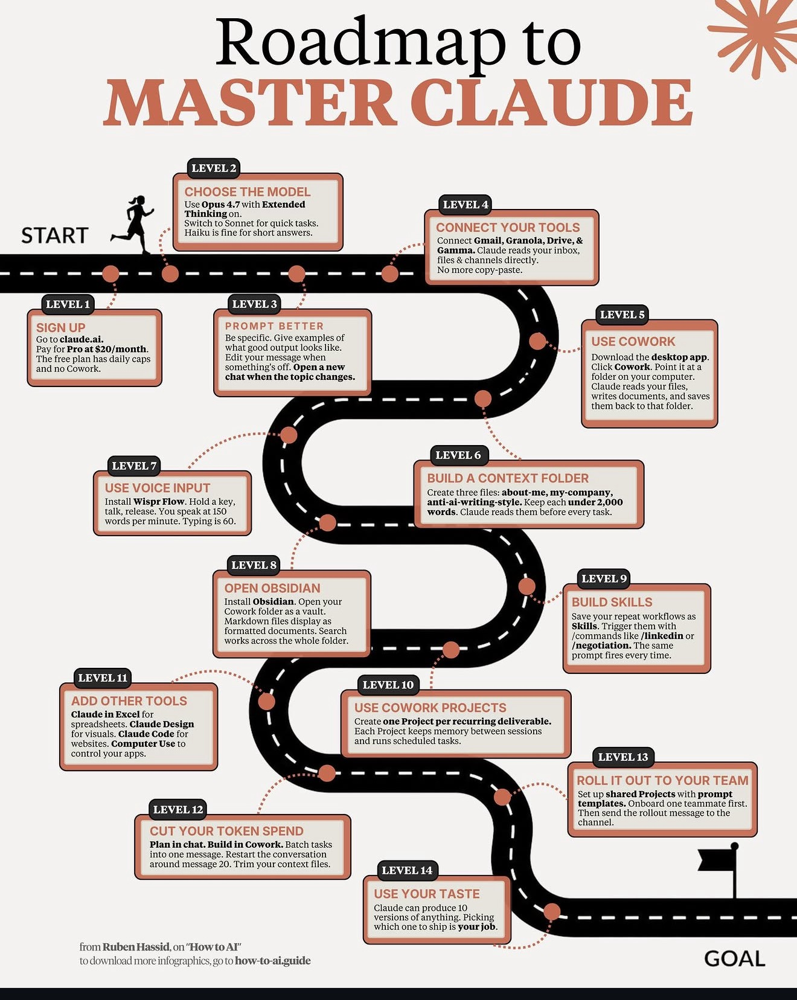

▸ Claude Master Roadmap 14 Levels / Ruben Hassid
L 1~4
기초 — Beginner
설치 · 기본 채팅 · 슬래시 명령 · 파일 읽기. 우리 팀 = setup.exe + Quick Start
L 5~8
중급 — Intermediate
CLAUDE.md 작성 · MCP 추가 · 플러그인 사용 · 멀티 turn 추론. 우리 팀 = 26개 플러그인 활용
L 9~12
고급 — Advanced
Hook 자동화 · 멀티 AI 핸드오프 · 검증 자동 · Watchdog. 우리 팀 = exec_orch + Haiku 검증
L 13~14
마스터 — Master
자체 플러그인 제작 · skill 큐레이션 · 팀 인프라 설계. 우리 팀 = Maintainer 역할